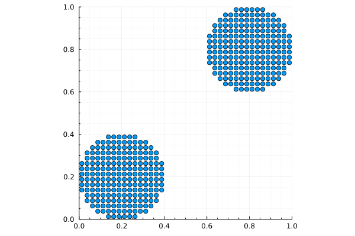

using Tesserae
import Plots
# Material constants
E = 500 # Young's modulus
ν = 0.3 # Poisson's ratio
λ = (E*ν) / ((1+ν)*(1-2ν)) # Lame's first parameter
μ = E / 2(1 + ν) # Shear modulus
ρ = 1000 # Density
r = 0.2 # Radius of disk
# Properties for grid and particles
struct GridProp
x :: Vec{2, Float64}
m :: Float64
mv :: Vec{2, Float64}
f :: Vec{2, Float64}
v :: Vec{2, Float64}
vⁿ :: Vec{2, Float64}
end
struct ParticleProp
x :: Vec{2, Float64}
m :: Float64
V :: Float64
v :: Vec{2, Float64}
∇v :: SecondOrderTensor{2, Float64, 4}
σ :: SymmetricSecondOrderTensor{2, Float64, 3}
end
# Mesh
mesh = CartesianMesh(0.05, (0,1), (0,1))
# Background grid
grid = generate_grid(GridProp, mesh)
# Particles
particles = let
pts = generate_particles(ParticleProp, mesh; alg=GridSampling())
pts.V .= volume(mesh) / length(pts)
# Left disk
lhs = findall(pts.x) do (x,y)
(x-r)^2 + (y-r)^2 < r^2
end
# Right disk
s = 1-r
rhs = findall(pts.x) do (x,y)
(x-s)^2 + (y-s)^2 < r^2
end
pts.v[lhs] .= Vec( 0.1, 0.1)
pts.v[rhs] .= Vec(-0.1,-0.1)
pts[[lhs; rhs]]
end
@. particles.m = ρ * particles.V
# Interpolation
mpvalues = [MPValue(BSpline(Linear()), mesh) for _ in 1:length(particles)]
# Plot results by `Plots.@gif`
Δt = 0.001
Plots.@gif for t in range(0, 4-Δt, step=Δt)
# Update interpolation values
for p in 1:length(particles)
update!(mpvalues[p], particles[p], mesh)
end
@P2G grid=>i particles=>p mpvalues=>ip begin
m[i] = @∑ w[ip] * m[p]
mv[i] = @∑ w[ip] * m[p] * v[p]
f[i] = @∑ -V[p] * σ[p] ⋅ ∇w[ip]
vⁿ[i] = mv[i] / m[i]
v[i] = vⁿ[i] + Δt * (f[i] / m[i])
end
@G2P grid=>i particles=>p mpvalues=>ip begin
v[p] += @∑ w[ip] * (v[i] - vⁿ[i])
∇v[p] = @∑ v[i] ⊗ ∇w[ip]
x[p] += @∑ Δt * (w[ip] * v[i])
end
for p in 1:length(particles)
Δϵₚ = Δt * symmetric(particles.∇v[p])
Δσₚ = λ*tr(Δϵₚ)*I + 2μ*Δϵₚ
particles.V[p] *= 1 + tr(Δϵₚ)
particles.σ[p] += Δσₚ
end
# plot results
Plots.scatter(
reinterpret(Tuple{Float64,Float64}, particles.x),
lims = (0,1),
ticks = 0:0.2:1,
minorgrid = true,
minorticks = 4,
aspect_ratio = :equal,
legend = false,
)
end every 100
